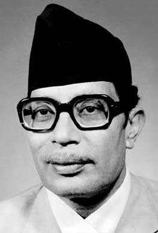

Narayan Gopal
स्वर सम्राट - Emperor of Voice

Narayan Gopal, turning point of mordern music industry of Nepal.
Timeline of Narayan Gopal's life:
- 1996: Born in Kathmandu, Nepal
- 2016: Comleted SLC (High School)
- 2020: Bachelor of Arts degree in Humanities from Tri-Chandra College. He also went to Maharaja Sayajirao University of Baroda in India but dropped out.
- 2028: Married to Pemala Lama
- 2017 - 2047: Years active
- Early Career: Visited Darjeeling, India to hold discussions with his admirers, his competitors and his critics.
- Assiciation Acts: Assiciation with Gopal Yonjan, Dibya Khaling, Pet Bhupi Sherchan, Poet Ishowr Ballav and many more..
- Later Career: Managed to find a job at National Dance Theatre, become a rector. Collaboration with a new generation of Nepali Youths.
- Awards and Recognitions:
- Best Composition (Radio Nepal)
- Best Singer (Radio Nepal)
- Ratna Record Award
- Gorkha Dakshin Bahu, Fourth
- Indra Rajya Laxmi Award
- 2047: Dies at the age of 51
— Tulsi Ghimire, In an interview with Tulsi Ghimire
More About Him